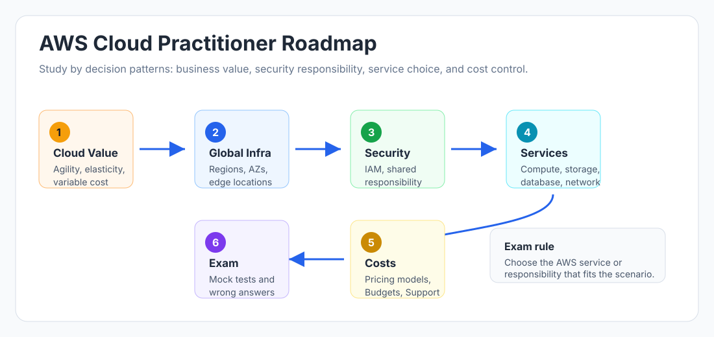
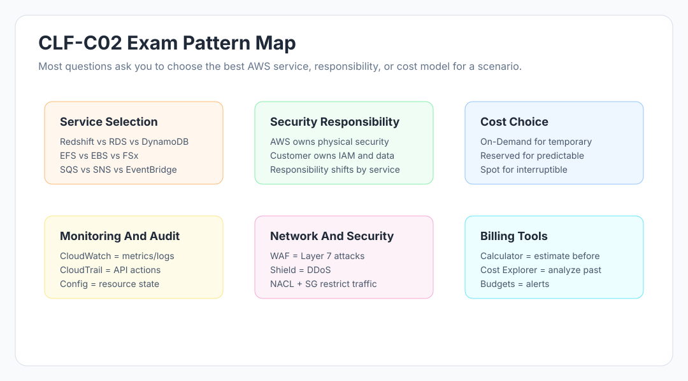

AWS Cloud Practitioner - Study Hub
Welcome to the AWS Certified Cloud Practitioner course inside certification-study-hub.
This course is designed for CLF-C02 preparation using simple explanations, scenario-based patterns, revision notes, and a timed 65-question mock test.
New Learner Start Here
If you are completely new to AWS, follow this path. Do not jump directly to the mock test.
- Read this README once to understand the full path.
- Open 00 - Certification Roadmap.
- Study Cloud Concepts and Global Infrastructure first.
- Study Compute, Storage, Databases, Networking, Security, and Billing.
- Use Flashcards after each section for recall.
- Attempt Chapter-Wise Practice Questions.
- Read Quick Revision Notes.
- Take the 65-Question Mock Test.
- Review every wrong answer and retake the mock after one day.
Simple rule: learn first, recall second, practice third, mock last.
Best Way To Read This Course
Use the GitHub Pages website for studying. It has sidebar navigation, responsive pages, diagrams, and direct mock-test access.
Open the AWS Cloud Practitioner Course
Take the 65-Question AWS Mock Test
Use this README as the source map. Use the interactive site for day-to-day reading.
How To Access GitHub Pages
- Open Certification Study Hub.
- Choose AWS Cloud Practitioner.
- Start with 00 - Certification Roadmap.
- Read each lesson from the left sidebar.
- Complete practice questions.
- Read quick revision notes.
- Take the timed mock test.
Direct links:
- AWS Course Home
- Certification Roadmap
- Flashcards
- Chapter-Wise Practice Questions
- Quick Revision Notes
- 65-Question Mock Test
Certification Snapshot
| Item | Detail |
|---|---|
| Exam | AWS Certified Cloud Practitioner |
| Exam code | CLF-C02 |
| Level | Foundational |
| Duration | 90 minutes |
| Questions | 65 total multiple choice / multiple response questions |
| Scored questions | 50 scored and 15 unscored, not identified during the exam |
| Passing score | 700 on a 100-1000 scaled score |
| Cost | USD 100, with local pricing/taxes shown during official scheduling |
| Delivery | Pearson VUE test center or online proctored exam |
| Validity | 3 years |
| Prerequisites | No mandatory prerequisite |
Always verify official details before registering because pricing, delivery policies, and foreign exchange updates can change.
65 Questions Or 60?
AWS Cloud Practitioner is 65 questions, not 60. The confusion usually comes from the official scoring note:
- You see 65 total questions in the exam.
- 50 questions affect your score.
- 15 questions are unscored and are not marked separately.
- Practice with 65 questions so your timing matches the real exam.
Visual Roadmap

Study order:
[ ]00 - Certification Roadmap[ ]01-cloud-concepts/- cloud value, economics, CAF, Well-Architected basics[ ]02-aws-global-infrastructure/- Regions, Availability Zones, edge locations[ ]03-core-services/- compute, storage, database[ ]04-security-and-compliance/- shared responsibility, IAM, governance, security services[ ]05-billing-and-pricing/- cost tools, pricing models, support plans[ ]06-cloud-technology-and-services/- migration, integration, broader AWS services[ ]Flashcards - fast recall for service clues and exam patterns[ ]practice-questions/- chapter-wise questions[ ]revision-notes/- final revision[ ]mock-tests/- full timed mock test
Official Domain Weights
| Domain | Weight | Focus |
|---|---|---|
| Cloud Concepts | 24% | AWS value, cloud economics, CAF, Well-Architected |
| Security and Compliance | 30% | Shared responsibility, IAM, security services, compliance |
| Cloud Technology and Services | 34% | Compute, storage, database, networking, integration, AI/ML basics |
| Billing, Pricing, and Support | 12% | Pricing models, cost tools, Organizations, support resources |
Most important: Security + Technology = about 64% of scored exam content. Start there if your time is limited.
Pattern Analysis From Recent Helpful Practice Questions
Your recent 65-question practice set strongly points to these recurring exam patterns:

| Pattern | What The Exam Is Testing | Study Action |
|---|---|---|
| Shared responsibility | AWS vs customer responsibility changes by service | Compare EC2, RDS, Lambda, S3 |
| Security service selection | WAF vs Shield vs GuardDuty vs Inspector vs Macie vs Security Hub | Memorize threat/service clues |
| Monitoring and audit | CloudWatch vs CloudTrail vs Config | Know "metrics", "API actions", "resource state" |
| Storage selection | S3 classes, EBS, EFS, FSx | Match access pattern and file/block/object need |
| Database selection | RDS, Aurora, DynamoDB, Redshift, ElastiCache, Neptune | Match workload: SQL, NoSQL, OLAP, cache, graph |
| Integration services | SQS, SNS, EventBridge | Queue vs push notification vs event routing |
| Pricing models | On-Demand, Reserved, Savings Plans, Spot | Match workload predictability and interruption tolerance |
| Cost tools | Pricing Calculator, Cost Explorer, Budgets, Compute Optimizer | Estimate vs analyze vs alert vs rightsizing |
| Global infrastructure | Region, AZ, edge location, multi-AZ | Match availability, latency, data residency |
| Migration and governance | Application Discovery Service, Outposts, Service Catalog, Organizations | Match business/governance clue |
Where To Focus Most
If you do not have time to study everything equally, use this order:
Security and Compliance
- Shared responsibility model
- IAM users, groups, roles, policies
- Root user protection and MFA
- Least privilege
- CloudTrail, Config, CloudWatch, Artifact
- WAF, Shield, GuardDuty, Inspector, Macie, Security Hub
Cloud Technology and Services
- EC2, Lambda, Fargate, Elastic Beanstalk
- S3, EBS, EFS, FSx
- RDS, Aurora, DynamoDB, Redshift, ElastiCache, Neptune
- VPC basics, security groups, NACLs, Direct Connect
- SQS, SNS, EventBridge
- CloudFront and edge locations
Billing, Pricing, and Support
- On-Demand, Reserved, Savings Plans, Spot
- Cost Explorer, Pricing Calculator, Budgets
- Organizations and consolidated billing
- AWS Marketplace and support plans
Cloud Concepts
- CapEx vs OpEx
- Stop guessing capacity
- Economies of scale
- Elasticity and agility
- CAF perspectives
- Well-Architected pillars
How To Register, Pay, And Get Certified
- Go to AWS Training and Certification.
- Sign in or create your AWS Builder ID / AWS Certification Account.
- Select Go to your Account.
- Select Schedule New Exam.
- Choose AWS Certified Cloud Practitioner (CLF-C02).
- Select Schedule with Pearson VUE.
- Choose test center or online proctored exam.
- Select your exam date and time.
- Pay through Pearson VUE using a supported payment method or voucher.
- Read the confirmation email and ID requirements carefully.
Payment and policy notes:
- AWS lists the foundational exam at USD 100.
- Local pricing, taxes, and exchange-rate updates may apply.
- AWS lists INR pricing for foundational exams through the Pearson Mindhub voucher store for voucher purchases.
- Pearson VUE supports payment methods such as credit card or voucher.
- You can reschedule up to 24 hours before the appointment, but AWS/Pearson VUE limit how many times an appointment can be rescheduled.
- Cancelling or rescheduling within 24 hours can forfeit the exam fee.
- If English is not your first language, AWS provides an ESL +30 minutes accommodation request path before scheduling.
Always verify current policies on AWS official pages before paying.
Certification Readiness Checklist
You are ready when you can:
- Score 70-80% or higher on the 65-question mock test twice.
- Explain why each wrong option is wrong.
- Identify the right service from short scenario clues.
- Explain shared responsibility for EC2, RDS, Lambda, and S3.
- Choose S3 storage classes from retrieval requirements.
- Choose database services from workload patterns.
- Choose cost tools from estimate/analyze/alert/optimize clues.
- Choose network/security controls from threat and access clues.
Official AWS Study Links
- AWS Certified Cloud Practitioner official page
- CLF-C02 Exam Guide
- AWS Certification exam preparation
- Before testing: policies, pricing, scheduling
- AWS Skill Builder
- AWS Training and Certification account
- AWS Cloud Practitioner Essentials
- AWS Certification Official Practice Question Sets
- AWS Well-Architected Framework
- AWS Cloud Adoption Framework
- AWS Pricing Calculator
- AWS Documentation
- AWS Whitepapers
- AWS re:Post
Top Exam Tips
- If the question asks "who did what," think CloudTrail.
- If the question asks "is this resource configured correctly," think Config.
- If the question asks about CPU metrics or logs, think CloudWatch.
- If the question asks for web attack protection, think WAF.
- If the question asks for DDoS protection, think Shield.
- If the question asks for sensitive data discovery in S3, think Macie.
- If the question asks for threat detection, think GuardDuty.
- If the question asks for vulnerability scans, think Inspector.
- If the question asks for centralized security findings, think Security Hub.
- If the question asks for shared Linux file storage, think EFS.
- If the question asks for Windows SMB file storage, think FSx for Windows File Server.
- If the question asks for petabyte analytics, think Redshift.
- If the question asks for NoSQL low latency, think DynamoDB.
- If the question asks for temporary credentials, think STS.
- If the question asks for consolidated billing, think Organizations.
Disclaimer
All questions and explanations in this repository are original educational content. They are not real exam questions, exam dumps, or leaked certification material.
Start with 00 - Certification Roadmap.